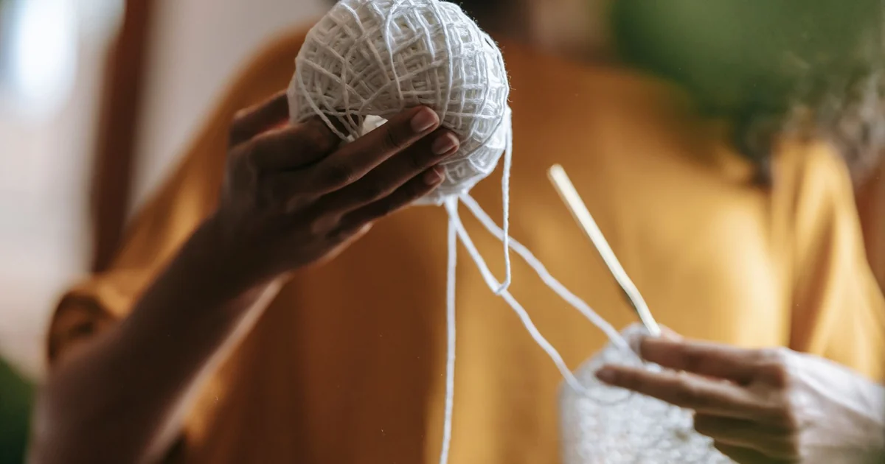
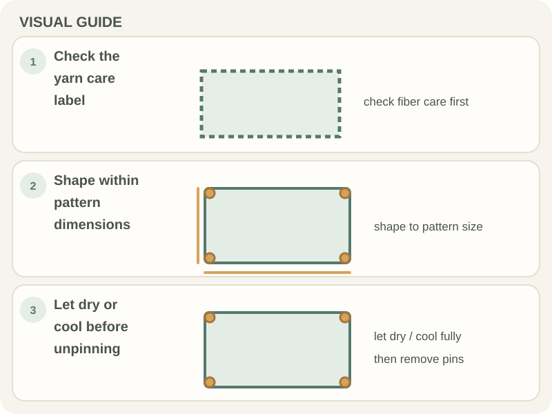

Patterns & Troubleshooting · Beginner guide
How to Block a Crochet Project
Block crochet only when yarn care instructions and project type allow it, using a method suited to the fiber.

Blocking can help shape lace or relax a piece, but it does not repair incorrect counts. Fibers respond differently, and heat or moisture can damage some yarns.
Before you begin
Read the yarn label and pattern first. Test a swatch before using steam or heat, and avoid stretching beyond the intended shape.
Step-by-step instructions
- Choose a method compatible with the fiber and care instructions; wet blocking, pinning, and steam are not interchangeable.
- Shape on a clean surface using pattern measurements or a schematic when provided.
- Pin only as needed to hold the shape. Do not force the fabric larger than it lies comfortably.
- Let the piece dry or cool fully before removing pins, then compare its shape with the pattern.

What to check
Test the fiber before the project
If the fabric resists shaping, check the pattern and gauge rather than pulling harder. Results depend on fiber and construction.
Frequently asked questions
Can every crochet project be blocked?
No. A safe method depends on fiber, label, and project; some yarns can be damaged by heat or moisture.
Will blocking fix uneven stitches?
It may relax small variations, but will not reliably correct missing stitches, wrong shaping, or major gauge mismatch.
Can blocking fix a project that is too small?
Blocking may shape some fabrics within their natural give, but it is not a dependable way to correct a substantial size or gauge mismatch.
Choose a method from fiber-care guidance
Blocking is a finishing choice, not one universal process. Read the yarn label and pattern notes before using water, steam, or pins. Wool, cotton, acrylic, blends, and specialty fibers can respond differently, and the same fiber can behave differently depending on how it is spun or treated. If instructions are unclear, test the intended method on a swatch made from the same yarn.
Wet blocking means shaping damp fabric and allowing it to dry; steam methods use heat and may be unsuitable for some yarns. Pinning can hold dimensions but should not force a piece beyond its natural stretch. Follow the specific care information rather than relying on a generic method.
Shape the piece without stretching it out of proportion
Lay the fabric on a clean, flat surface and compare it with the pattern measurements or schematic. Smooth it gently into shape. Place pins only where needed to hold an edge or point; avoid pulling a dense fabric wider just to meet a measurement. For motifs, align corners and sides evenly. For garments, compare matching pieces before assembly.
Keep the item away from direct heat unless the care label permits it. Let the fabric dry or cool fully before removing pins. If a swatch changes texture, sheen, or firmness after the test, stop and choose a safer finish.
Know what blocking can and cannot do
Blocking can help open lace, even small variations, or bring a piece into its intended shape when the fiber and construction allow it. It cannot replace a missed stitch, correct a wrong stitch count, or reliably fix fabric made at a substantially different gauge. Diagnose the construction first, then decide whether gentle shaping is appropriate.
Some pieces need no blocking. A compact item may retain its shape without it, while a lace pattern may benefit from careful opening. Use the pattern’s finishing notes, yarn care, and the project’s purpose together when deciding.
Blocking mistakes to avoid
- Applying heat without checking the label: heat may change or damage some fibers. Test a swatch and follow care guidance.
- Pinning to a larger size by force: stretched stitches may spring back or distort. Shape only as far as the fabric naturally allows.
- Unpinning while damp or warm: the fabric may shift before it is set. Wait until fully dry or cool.
Finish with a useful check
- Measure the swatch before and after the chosen method.
- Keep a note of the method used so care is consistent later.
- Check the final dimensions only after the piece has dried or cooled completely.